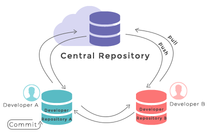
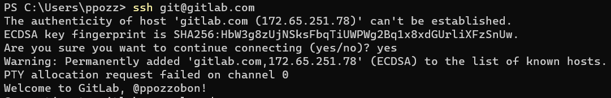

Git em 5 minutos
Alguns dias atrás fiz uma apresentação sobre git para alguns colegas de trabalho. O público era de engenheiros com alguma experiência em programação aplicada em engenharia, porém nunca tiveram contato com softwares de controle de versão.
Adaptei a apresentação para um post. Espero que possa ser útil para você também.
Git x GitLab x GitHub¶
- git: software de controle de versão
- GitLab e GitHub: provedores de repositórios remotos (não é obrigatório usá-los)
Funcionamento¶
- Controle de versão distribuído: cada um pode editar o mesmo arquivo simultaneamente
- repositório local (sua máquina) vs repositório remoto (GitLab)
- as mudanças (commits) só vão para o repositório remoto depois do comando
pull- caso as mudanças do
pullcausem conflito elas não serão aplicadas (até que se resolvam todos os conflitos)
- caso as mudanças do

Instalação (Windows)¶
-
Instalar com todas as opções recomendadas ativadas: Git
-
Instalar o Windows Terminal (opcional; facilita algumas tarefas). Get Windows Terminal - Microsoft Store
-
Instalar uma GUI (interface gráfica) para facilitar o uso. Recomendo o GitHub Desktop. Outra opção é usar um editor de texto com interface do git integrada. Minha recomendação: Visual Studio Code
Configuração das chaves ssh¶
{{< admonition type=note open=true >}} Os itens 4 e 5 abaixo são específicos para o GitLab. Porém, em outros provedores serão semelhantes. {{< /admonition >}}
- As chaves ssh são a "senha" que o git usa para poder acessar os repositórios remotos
- Após instalação do git, abrir terminal e digitar
git-gui - Help > Show SSH Key > Generate Key > Copy to clipboard
- Logar no GitLab > Profile > Preferences > SSH Keys (link direto)
- Colar chave, selecionar data de validade (coloque pelo menos 1 ano) > adicionar
- Adicionar o gitlab nos "known hosts": Abrir o Terminal >
ssh git@gitlab.com>yes

Pronto, agora o git de sua máquina local conseguirá autenticar nos seus repositórios que estão no GitLab. Note que se o repositório remoto estiver em outro servidor (ex. GitHub, esse processo tem que ser repetido lá).
Configuração do git¶
Abrir o Terminal:
$ git config --global user.name "John Doe"
$ git config --global user.email johndoe@example.com
Operações básicas¶
Commit¶
- É o registro de uma alteração no código.
- É o análogo à operação "salvar" de um documento Word.
- É obrigatório adicionar uma "commit message": frase curta que descreve o que foi alterado
Pull / Push¶
- Pull: trazer commits novos do remoto → local
- Push: enviar commits novos do local → remoto
- pode resultar em erro se os seus commits entrarem em conflito com os que estão no repositório remoto
Criar repositório¶
- Iniciar essa operação primeiro no GitLab/GitHub
- Atenção ao passo de "initialize with README" caso pretenda fazer upload de uma pasta já existente
Branch e Merge¶
- Branch são "versões" diferentes do seu código, que co-existem no seu repositório
- Uso: quando você quer desenvolver um novo recurso no seu código, mas não quer alterar o que já está funcionando: crie uma branch nova e vá fazendo commits nessa nova branch. Quando tudo estiver funcionando como esperado, faça o merge dessa branch com a master

Resolver conflitos¶
Ler este artigo: Sobre conflitos de merge
"Voltar no tempo"¶
git checkout <comitt-sha>
- Caso queira só ler o código é mais prático navegar pelo GitLab/GitHub.
Tópicos adicionais¶
- Arquivo
.gitignore- usado para definir arquivos e pastas que não devem ser rastreados. Exemplo
Boas práticas ao escrever códigos¶
O código deve ser organizado e legível o suficiente para que possa ser lido e entendido por outra pessoa e também por você mesmo após alguns meses. A "dica" que mais contribui para escrever um código legível é: - nomes de variáveis descritivos - não usar números mágicos
O código deve ser auto-explicativo, muitas vezes sem necessidade de comentários. Se você precisa fazer um comentário para explicar o que está fazendo no código, talvez seja um sinal que não respeitou as premissas acima.
Leitura recomendada: Clean Code: Naming
Exemplos:
Nomes de variáveis devem ser descritivos:
# ruim:
sigma = E * A * epsilon
# bom:
axial_tension = youngModulus * displacement / length
Não usar "números mágicos":
# ruim:
if stress < 860e6:
...
# bom:
allowable_stress = 860E6
if stress < allowable_stress:
...